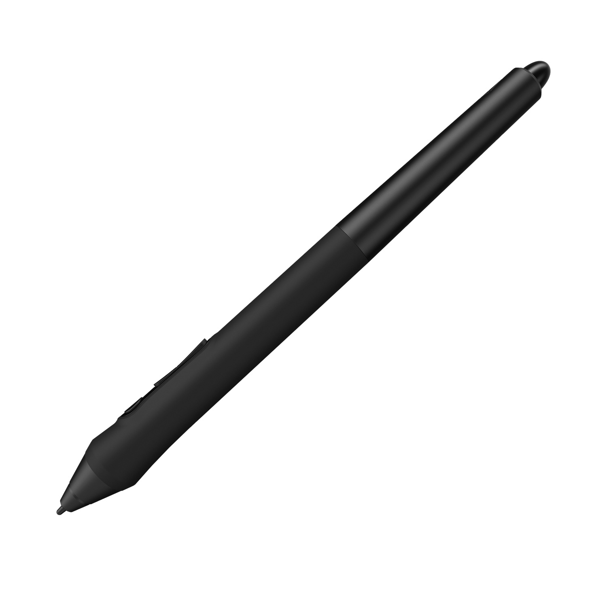
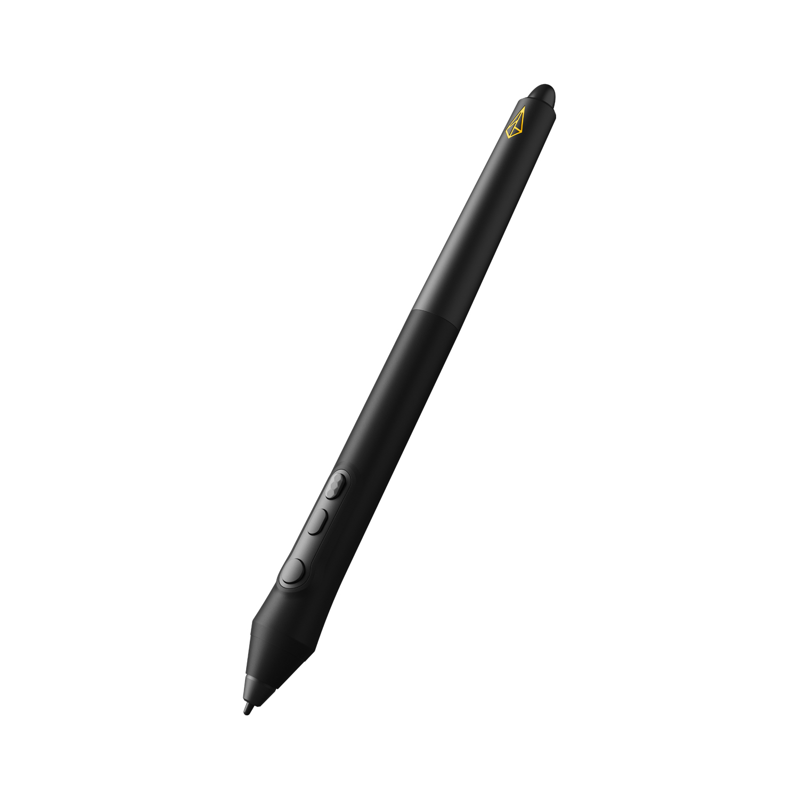
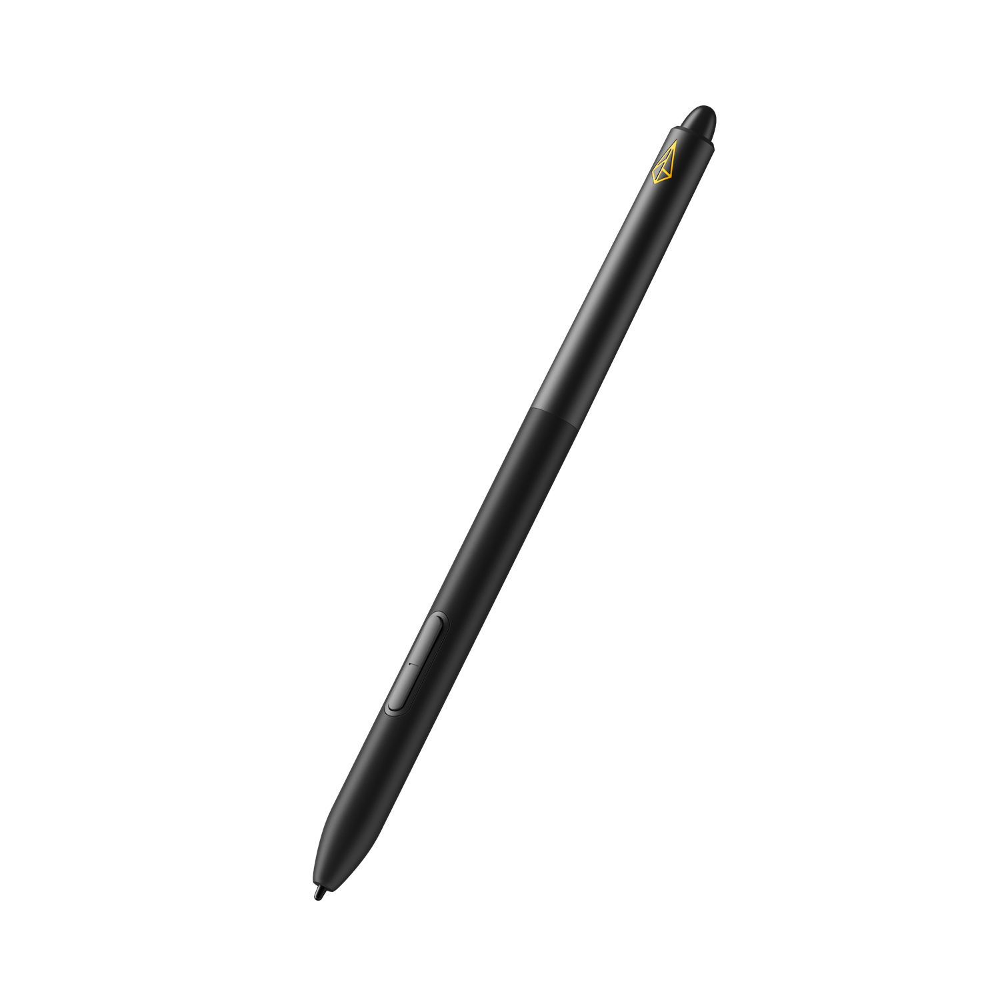
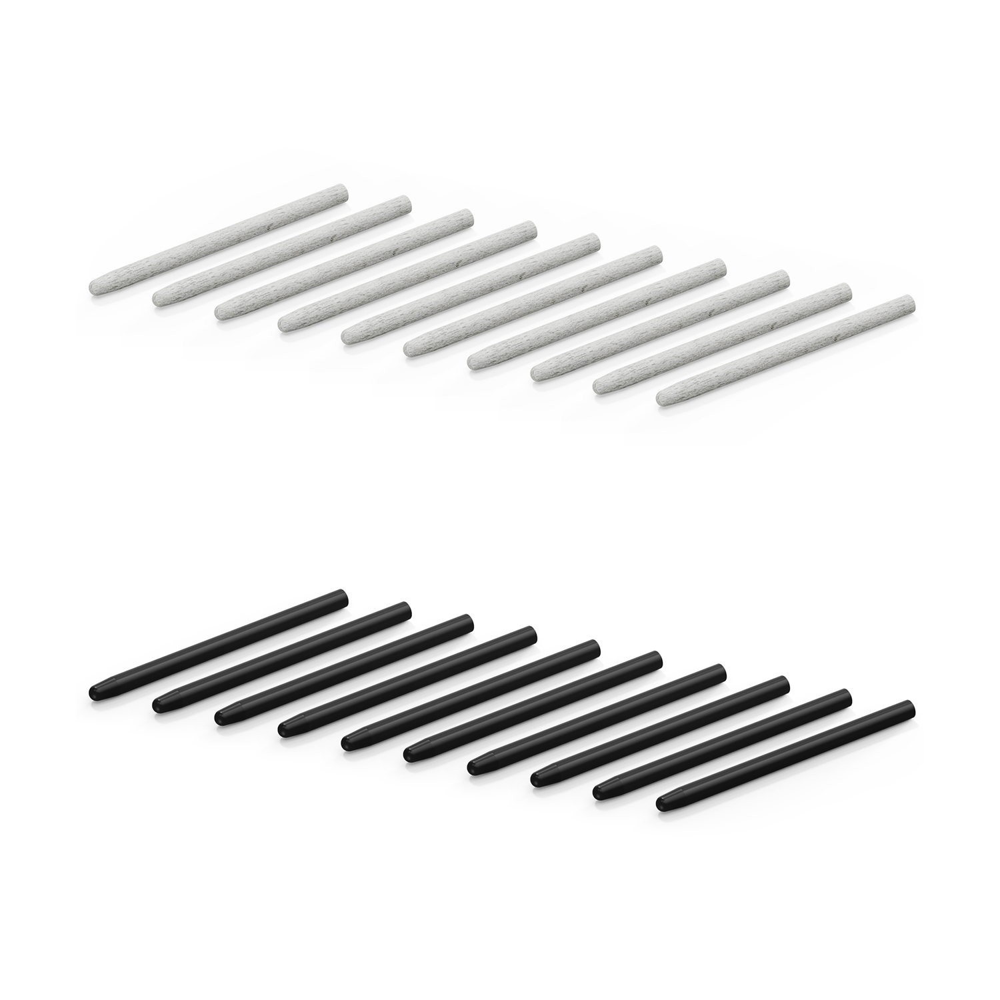
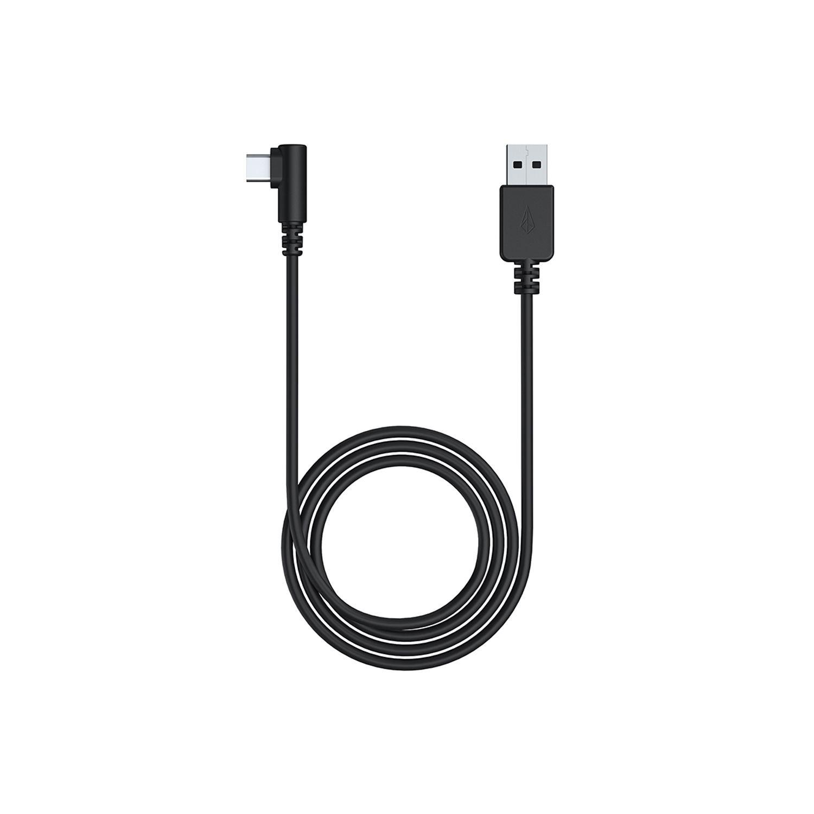
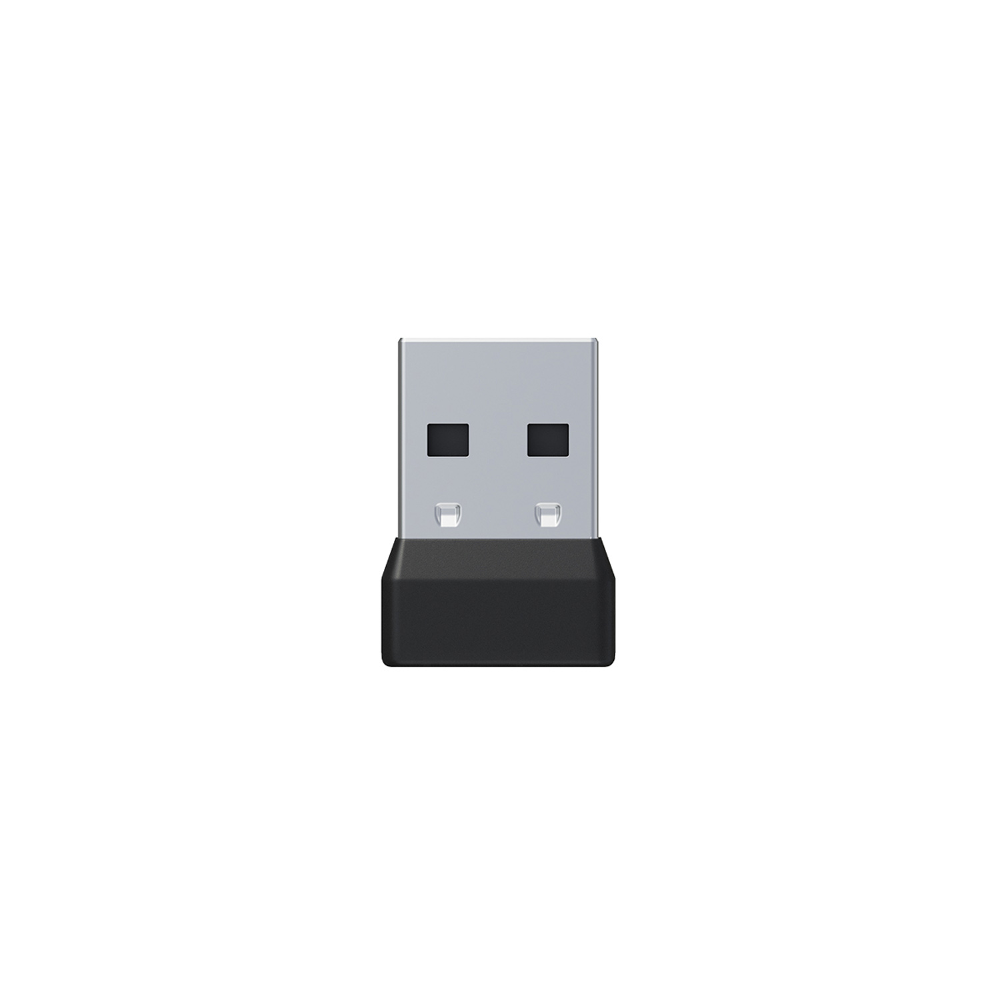
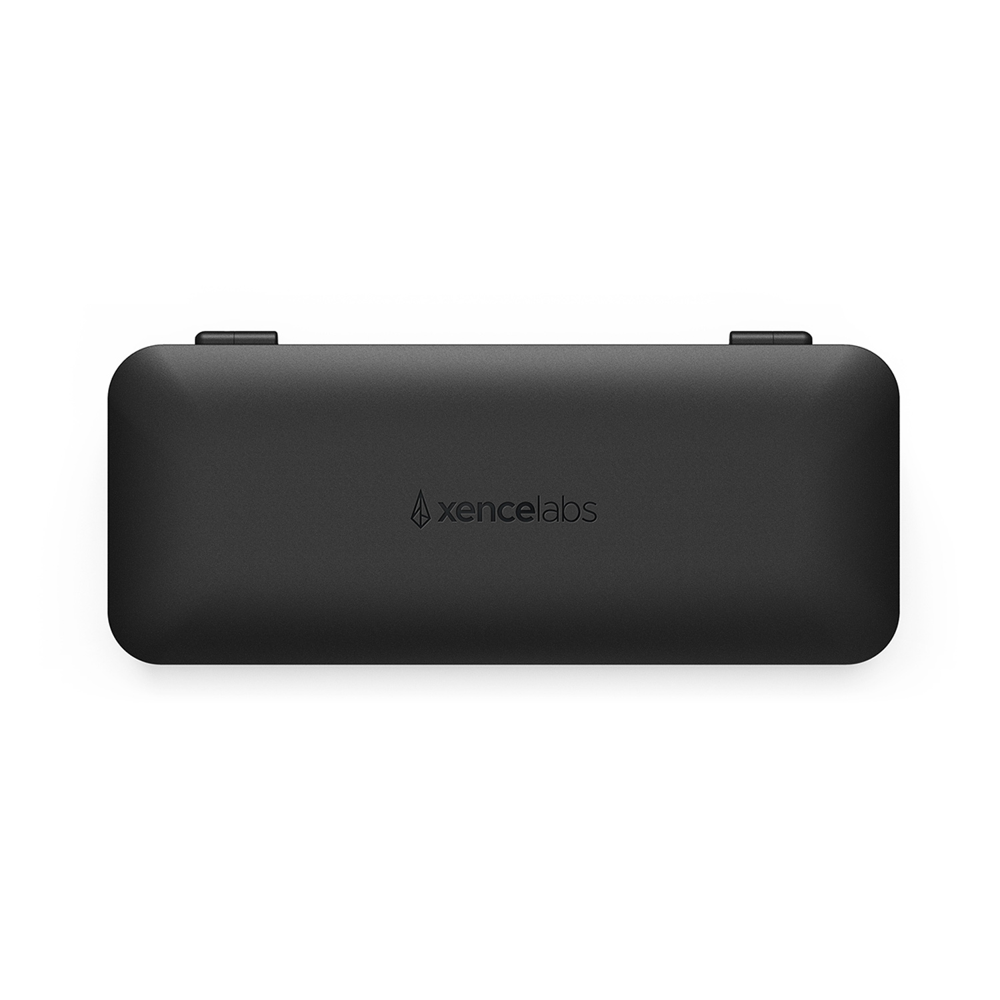
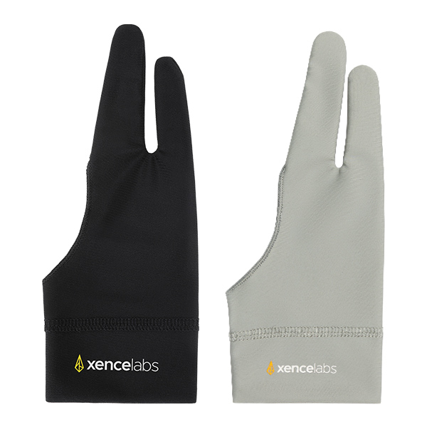

La Télécommande Xencelabs Quick Keys permet aux artistes d’intégrer naturellement des touches de raccourci dans leur flux de travail habituel grâce à une interface conviviale. Elle propose 8 boutons personnalisables vous permettant de créer jusqu’à 40 raccourcis par application que vous pouvez classer par groupes de fonctions connexes telles que le dessin, la coloration ou l’édition. Les artistes qui trouvaient auparavant les touches de raccourci contraignantes bénéficient désormais d’un puissant booster d’efficacité
Prix : 54,50€ 109,90€ Réduction de Noël : -50%

Stylet 3 Boutons pour Tablette Graphiques
Le stylet à 3 boutons est doté de 3 boutons programmables + gomme et de préréglages intuitifs prêts à l’emploi pour les logiciels les plus courants. Donner vie à votre imagination avec le stylet à 3 boutons. (pour Tablettes Graphiques d'Xencelabs)
Prix : 24,95€ 49,90€ Réduction de Noël : -50%

Stylet 3 Boutons V2 pour Tablette Graphiques
Le 3 Boutons Stylet v2 + Gomme comprend trois boutons programmables + une gomme et des préréglages intuitifs prêts à l'emploi pour les applications couramment utilisées. Donnez vie à votre vision avec le 3 Boutons Stylet v2 + Gomme.
Prix : 24,95€ 49,90€ Réduction de Noël : -50%
Stylet Fin pour Tablette Graphiques
Le stylet fin est doté de deux boutons programmables + une gomme et de préréglages intuitifs prêts à l’emploi pour les logiciels les plus courants. Donner vie à votre imagination avec le stylet fin. (pour Tablettes Graphiques d'Xencelabs)
Prix : 23,45€ 46,90€ Réduction de Noël : -50%

Stylet Fin V2 pour Tablette Graphiques
Une nouvelle option professionnelle. Le Stylet Fin v2 + Gomme a été développé avec des personnes comme vous, qui aiment travailler avec des outils traditionnels et qui voulaient quelque chose de naturel et familier dans la main. Il a un corps de profil plus petit que le 3 Boutons Styelt v2 + Gomme et dispose de deux boutons bien positionnés + gomme qui est programmable et en caoutchouc doux au toucher, offrant une expérience de dessin plus confortable.
Prix : 23,45€ 46,90€ Réduction de Noël : -50%

Pointes Mixtes pour Stylet de Tablette Graphique
Les pointes de rechange mixtes contiennent des pointes standard et feutre qui sont conçues pour être utilisées avec le stylet 3 boutons et le stylet fin de Xencelabs (Stylet de Tablette Graphique). La pointe usée est facilement remplacée à l’aide de l’extracteur de pointe fourni dans l’étui à stylets. Les pointes à stylet mixtes sont disponibles en lot de 10 pièces ou lot de 20 pièces.
Prix : 7,45€ 14,90€ Réduction de Noël : -50%
Câble USB
Câble USB-C à USB-A pour la Tablette à stylet Xencelabs.
Prix : 4,95€ 9,90€ Réduction de Noël : -50%

Câble L pour Quick Keys
Prix : 4,95€ 9,90€ Réduction de Noël : -50%

Dongle
Dongle pour une connexion sans fil avec la Tablette à Stylet M et la Télécommande Quick Keys de Xencelabs.
Prix : 7,95€ 15,90€ Réduction de Noël : -50%

Étui à stylets
Étui à stylets seul. Aucun des 2 stylets, pointes de rechange, extracteur de pointe, dongle et adaptateur USB ne sont inclus.
Prix : 9,95€ 19,90€ Réduction de Noël : -50%

Gant de Dessin
Améliorer votre expérience de dessin en réduisant la friction entre votre main et la surface de la tablette. Le gant de dessin protège la surface de votre tablette d’éventuelles traces tout en gardant votre main libre pour saisir votre stylet confortablement.